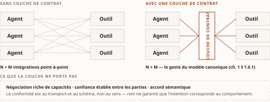
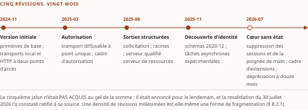
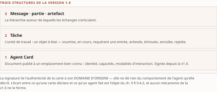
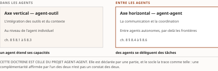

Chapitre 8Anatomie : MCP (agent-outil) et A2A (agent-agent)
Livre I — Coopérer : fondements de l'interopérabilité et couche protocolaire agentique. Second mouvement — la couche protocolaire agentique (ch. 7-11)
§ 8.1MCP comme couche de contrat : problème N×M, primitives, transports
8.1.1 Le problème N×M et la critique du slogan
Ce que le protocole agent-outil standardise n'est pas l'appel d'outil en lui-même — la façon dont un modèle émet une invocation relève de l'ingénierie et a été traitée au ch. 4 § 4.4 — mais le contrat entre un client, hébergé par l'hôte agentique, et un serveur, exposé par un fournisseur de capacités.
Le problème traité est combinatoire et familier de l'intégration d'entreprise (ch. 1 § 1.3.1) : faire dialoguer N agents avec M outils sans standard impose N×M intégrations point-à-point ; une couche de contrat partagée ramène ce coût à N+M. C'est exactement le geste du modèle de données canonique (ch. 1 § 1.6.1), transposé à l'axe agent-outil — et il vaut d'être reconnu comme tel plutôt que présenté comme une nouveauté.
Le slogan promotionnel d'un « port universel de l'IA » capture l'ambition, mais reste un objet de critique légitime, et la critique est précise. Un port universel négocie électriquement ses modes ; ce protocole, lui, ne porte pas de couche riche de négociation de capacités ni de confiance établie entre les parties. L'appariement est conforme au transport et au schéma, non au sens : un client peut se brancher sur un serveur sans qu'aucun mécanisme ne garantisse que l'intention de l'agent corresponde au comportement réel de l'outil.
Le contrat est donc réel mais étroit : il fixe la forme de l'échange, pas son interprétation. C'est le verrou que le ch. 9 § 9.4 prend pour objet, et la première illustration concrète de la thèse du ch. 2 — les protocoles agentiques présupposent l'accord sémantique et ne le fournissent pas.

8.1.2 Architecture et primitives, sous l'angle de la bidirectionnalité négociée
L'architecture repose sur un triangle hôte / client / serveur communiquant par appels de procédure en JSON : l'hôte instancie un client par serveur connecté, et chaque serveur expose ses capacités.
L'apport propre à l'analyse d'interopérabilité tient moins à l'inventaire des primitives — outils, ressources, gabarits d'invite, déjà décrits au ch. 4 § 4.4 — qu'à la grille de contrôle qui les distingue :
| Primitive | Contrôlée par | Ce que cela prescrit |
|---|---|---|
| Outils | le modèle | c'est le modèle qui décide de les invoquer |
| Ressources | l'application | l'hôte décide quel contexte injecter |
| Gabarits d'invite | l'utilisateur | déclenchement explicite |
Tableau 8.1 — La répartition du contrôle entre primitives : une clause du contrat, non un détail d'implémentation.
Cette répartition est elle-même une clause du contrat : elle prescrit qui, dans la chaîne, est autorisé à mettre une primitive en mouvement. La lire comme un simple classement fonctionnel fait manquer ce qu'elle porte de gouvernance.
Le trait le plus distinctif au regard d'une API REST classique est l'existence de primitives client, qui inversent le sens du dialogue :
- l'échantillonnage — le serveur peut demander à l'hôte une complétion du modèle ;
- la sollicitation — le serveur peut demander une information structurée manquante, en cours d'exécution ;
- les racines — l'hôte délimite le périmètre de système de fichiers accessible.
Ces canaux instaurent une interopérabilité négociée et interactive, bidirectionnelle, absente du modèle requête-réponse unidirectionnel. Le contrat n'est plus un appel et son retour, mais un échange où le serveur peut, à son tour, interroger l'hôte.
☑ ⚠ Revalidation du 30 juillet 2026 — et c'est ici que la révision 2026-07-28 mord le plus fort. La description ci-dessus est celle de la révision 2025-11-25, et elle reste exacte pour elle. Le texte neuf, lu à sa source, retire le mécanisme et déprécie deux des trois primitives : (1) les racines et l'échantillonnage passent à l'état déprécié — avec la journalisation —, la spécification recommandant de leur substituer, respectivement, le passage des répertoires par paramètres d'outil ou URI de ressource, et l'intégration directe aux interfaces des fournisseurs de modèles ; (2) le mécanisme de requête serveur-vers-client est remplacé par le patron des requêtes à tours multiples (Multi Round-Trip Requests, MRTR) : le serveur ne lance plus une requête à l'hôte, il renvoie un résultat typé input_required portant ses demandes, et le client rejoue la requête d'origine en y joignant ses réponses.
Le renversement que ce paragraphe analysait n'est pas annulé — il change de forme, et la nuance est le résultat de la revalidation. L'appelé peut toujours exiger de l'appelant une information qu'il n'avait pas ; mais il l'exige désormais par la valeur de retour et non par un appel entrant, ce qui rétablit un flux à sens unique au niveau du transport tout en conservant la négociation au niveau du contrat. Le protocole de conversation subsiste ; il cesse d'être un protocole à deux appelants. ⚠ La sollicitation, elle, n'est pas dépréciée : elle passe sous MRTR, et sa notification de complétion — introduite en 2025-11-25 — est retirée.
Lecture de l'auteur c'est le premier endroit de la somme où un contrat d'interface autorise explicitement l'appelé à solliciter l'appelant. Le ch. 1 § 1.1.3 posait le contrat comme publication de ce qu'un système offre et exige ; ici, il devient un protocole de conversation. Le socle établit l'existence des trois primitives client et la direction de leur appel ; il n'établit ni cette lecture, ni le caractère inédit qu'elle prête à ce renversement dans l'histoire des contrats d'interface. Elle est proposée comme telle. ⚠ Et la lecture survit à la revalidation sous une forme bornée : ce que la révision 2026-07-28 montre, c'est qu'un renversement de sens d'appel est une propriété coûteuse qu'un standard peut choisir de rendre à l'état de résultat typé — la bidirectionnalité était un choix, non une nécessité de la couche agentique.
8.1.3 Transports : une trajectoire du couplage vers le découplage
L'histoire des transports se lit comme une décroissance progressive du couplage, et c'est l'illustration la plus nette de l'invariant du Livre dans tout le mouvement.
| Étape | Mécanisme | Couplage résiduel |
|---|---|---|
| Entrée-sortie standard | le serveur est un sous-processus local de l'hôte | fort — cycle de vie et machine partagés |
| HTTP à deux points d'accès | un point pour les requêtes, un pour le flux d'événements | déprécié dès la révision suivante |
| HTTP diffusable à point unique | un seul point d'accès | résiduel — un identifiant de session épingle un client à une instance |
| Cœur sans état (ratifié le 28 juill. 2026) | suppression de la poignée de main, de l'identifiant de session et de la reprise de flux | aucun — serveur déployable derrière un répartiteur à tourniquet |
Tableau 8.2 — La trajectoire des transports : quatre étapes, un couplage qui décroît jusqu'à l'absence d'état partagé.
☑ ⚠ Revalidation du 30 juillet 2026 : la dernière étape n'est plus une cible, elle est le contrat. Trois termes du texte neuf, lus à sa source. (1) Les sessions de protocole et l'en-tête qui les portait disparaissent du transport diffusable ; l'état qu'un serveur doit conserver d'un appel à l'autre passe par des poignées explicites, frappées par le serveur et transmises comme arguments d'outil ordinaires. (2) La poignée de main d'initialisation disparaît : chaque requête porte désormais sa version de protocole et les capacités du client dans ses métadonnées, et une méthode de découverte permet la sélection de version en amont. (3) ⚠ Le découplage se paie, et le prix n'était pas au tableau : la reprise de flux et la retransmission de messages sont retirées — un flux de réponse interrompu perd la requête en vol, que le client doit réémettre sous un identifiant neuf.
C'est le fait le plus instructif de la revalidation, et il corrige la lecture d'origine. Le tableau lisait la trajectoire comme une décroissance monotone du couplage ; la révision montre que la dernière marche échange un couplage d'infrastructure contre une obligation de réémission côté client. Le couplage ne disparaît pas davantage ici qu'ailleurs : il se déplace vers l'appelant — exactement ce que le ch. 1 § 1.3 énonce, et que ce chapitre croyait pour une fois pouvoir écarter. L'HTTP à deux points d'accès, déprécié depuis 2025-03-26, est en outre reclassé sous la politique de cycle de vie neuve.
8.1.4 Une interface d'outillage assortie d'un cadre d'autorisation
Formulation imposée, tenue ici et à ses trois autres occurrences marquées (réserve F-01 du Vol. II) : ce protocole est assorti d'un cadre d'autorisation, jamais d'un protocole « sécurisé ». La distinction n'est pas de style. Un cadre fournit les mécanismes ; la sécurité dépend de l'implémentation qui les met en œuvre, et le ch. 11 expose ce que le socle nomme comme risques attachés. Écrire « protocole sécurisé » attribuerait à la spécification une propriété que seule une mise en œuvre peut porter — et c'est exactement ce que le garde-fou R-02 du Vol. III proscrit en matière cryptographique.
§ 8.2Jalons datés, autorisation et sémantique des résultats
8.2.1 Les cinq jalons : trajectoire de maturation d'un standard
La succession des révisions constitue une étude de cas de gouvernance d'un standard (ch. 1 § 1.2.2), où chaque jalon ajoute une couche au contrat.
| Révision | Date | Apports majeurs pour le contrat |
|---|---|---|
| 2024-11-05 | 5 nov. 2024 | version initiale ; primitives de base ; transports local et HTTP à deux points d'accès |
| 2025-03-26 | 26 mars 2025 | transport diffusable à point unique ; cadre d'autorisation |
| 2025-06-18 | 18 juin 2025 | sorties structurées ; sollicitation ; racines ; serveur qualifié serveur de ressources |
| 2025-11-25 | 25 nov. 2025 | découverte d'identité ; schémas 2020-12 ; tâches asynchrones expérimentales |
| 2026-07-28 | ratifiée le 28 juill. 2026 | cœur sans état — suppression des sessions de protocole et de la poignée de main ; server/discover ; cadre d'extensions ; politique de cycle de vie et de dépréciation à fenêtre de douze mois ; dépréciation des racines, de l'échantillonnage et de la journalisation ; dépréciation de l'enregistrement dynamique de client |
Tableau 8.3 — Cinq jalons en moins de deux ans, et un cinquième qui n'était pas acquis au gel — il l'est depuis.
☑ ⚠ REVALIDATION EXÉCUTÉE LE 30 JUILLET 2026, sur la source primaire. L'historique de la péremption se conserve ci-dessous, au passé, parce qu'il est le seul cas du corpus où le dispositif du ch. 50 a été éprouvé par le réel (décision 17c).
Ce que le chapitre déclarait, et ce qui a été fait. À la rédaction — 27 juillet 2026 —, le cinquième jalon était une révision candidate et non une révision publiée : gelée le 21 mai 2026, sa ratification était annoncée pour le lendemain, et l'anatomie des § 8.1 et § 8.2 décrivait la révision 2025-11-25. Le 28 juillet 2026, la bascule a été constatée à la date annoncée (socle consolidé S-001 ; registre du volet résiduel de G-1), et le chapitre a écrit — c'était le geste juste — que constater une bascule n'est pas lire le texte qui a basculé, laissant la revalidation ouverte et non exécutée. ⚠ Elle est exécutée ici : le journal des changements de la révision 2026-07-28 a été extrait à sa source le 30 juillet 2026, et les § 8.1.2, § 8.1.3, § 8.2.1, § 8.2.2 et § 8.2.3 sont revalidés en bloc, comme la règle l'exigeait — non par retouche d'un texte gelé, mais par confrontation de chaque énoncé au texte neuf.
Ce que la revalidation change de régime, et ce qu'elle ne change pas. Les énoncés portant sur la révision 2026-07-28 résolvent désormais contre un texte lu, non contre une annonce : ils quittent le repérage pour l'extraction. ⚠ Mais le socle n'est pas modifié par cette pièce — S-001 et S-098 conservent leur état, et un rédacteur ne verse pas au socle : il remonte. Le versement est dû, et il est porté à la passe de socle.
La divergence interne à la source, elle, n'est pas rejouée et reste consignée. Le 28 juillet 2026, la page de versionnement déclarait encore courante la révision précédente (S-098), quand la page servie sous la révision neuve la rangeait parmi les révisions héritées tout en la nommant courante — divergence interne à une seule page. Ce constat est daté du 28 juillet et ne se corrige pas depuis le 30 : il décrit l'état du site à sa date, et le registre le laisse ouvert.
(a) Cette révision porte des changements cassants, et non seulement des ajouts — le § 8.1.2 et le § 8.1.3 en portent désormais le détail lu. Sa ratification a périmé l'anatomie en bloc, et non par retouches : c'est pourquoi la revalidation a porté sur cinq sous-sections d'un coup.
(b) La cadence elle-même est un fait d'interopérabilité : cinq jalons en moins de deux ans témoignent d'un standard en maturation rapide, où la rétrocompatibilité et la dépréciation deviennent des objets de spécification à part entière. C'est un signe de maturité — et, simultanément, un coût pour qui doit épingler une version.
La densité de révisions millésimées rejoint une critique adressée à l'écosystème : un protocole d'interopérabilité ne vaut que par la stabilité de son contrat dans le temps, et la profusion de spécifications versionnées par date constitue elle-même une source de fragmentation. Une grille d'analyse sémantique situe ces gains essentiellement aux niveaux technique et syntaxique — transports, schémas, autorisation. Le niveau sémantique reste repoussé vers la couche applicative (ch. 9 § 9.4).
8.2.2 Autorisation et identité : le serveur comme serveur de ressources
L'autorisation est un cas d'étagement plutôt que de réinvention : elle réutilise massivement la pile d'identité classique posée au ch. 3 § 3.2.
Une révision qualifie le serveur de serveur de ressources, en lui imposant la validation d'audience des jetons et la découverte de ses métadonnées par des mécanismes normalisés. ⚠ La validation d'audience est ici décisive, et sa fonction mérite d'être nommée précisément : elle confine un jeton à un destinataire déclaré, et prive ainsi de son ressort la classe d'attaque du mandataire confus — celle-là même que le ch. 3 § 3.1.1 identifiait comme défaut structurel des architectures déléguées. C'est l'un des rares endroits du mouvement où un mécanisme protocolaire prend nommément pour cible une classe d'attaque connue ; la fermer reste à la charge de l'implémentation.
Une révision ultérieure ajoute la découverte d'identité, des documents de métadonnées de client, et le consentement incrémental — élargir le périmètre d'accès au fil des besoins plutôt que d'exiger d'emblée une autorisation large. C'est le moindre privilège du ch. 6 § 6.5.2, porté par le protocole plutôt que par l'exploitant.
☑ ⚠ Revalidation du 30 juillet 2026 : la révision 2026-07-28 déplace l'enregistrement du client, et c'est un changement d'ancrage de confiance. L'enregistrement dynamique de client (RFC 7591) est déprécié comme mécanisme d'enregistrement, au profit des documents de métadonnées d'identifiant client (Client ID Metadata Documents) ; il demeure disponible pour compatibilité avec les serveurs d'autorisation qui ne les prennent pas en charge. S'y ajoutent trois durcissements : le serveur d'autorisation devrait porter le paramètre iss de la RFC 9207 et le client doit le valider contre l'émetteur enregistré avant d'échanger le code ; le client doit déclarer un application_type approprié à l'enregistrement, pour éviter les conflits d'URI de redirection avec OpenID Connect ; et les identifiants de client sont liés au serveur d'autorisation qui les a émis — ils se conservent indexés par émetteur, ne se réutilisent pas ailleurs, et un changement de serveur impose un réenregistrement.
Qualification, au sens de R-02 : ce que ce déplacement démontre et ne démontre pas. Il démontre que la spécification a nommé et fermé une classe de confusion d'émetteur au niveau du contrat. Il ne démontre pas que le parc déployé suive : une dépréciation ouvre une fenêtre de douze mois pendant laquelle les deux mécanismes coexistent, et c'est précisément la fenêtre où une institution doit savoir lequel elle exploite.
Qualification, au sens de R-02 du Vol. III, et rappel de la réserve F-01. Ce que ce cadre démontre : qu'un jeton présenté est confiné à l'audience déclarée, et que les métadonnées du serveur sont découvrables par un chemin normalisé. Ce qu'il ne démontre pas : que l'implémentation valide effectivement l'audience, que le serveur est digne de confiance, ni que l'outil invoqué se comporte comme sa description l'annonce. Cadre d'autorisation, jamais « sécurisé ».
Une réserve de statut sur le socle sous-jacent : le cadre d'autorisation de nouvelle génération sur lequel s'appuie cette pile demeure un projet à la date d'arrêt des sources, la version antérieure restant la base normative en vigueur. Le ch. 3 § 3.2.1 porte la même réserve, et le volet Livre I de la porte G-1 les a instruites toutes deux le 27 juillet 2026 (gel-2026-07-27.md, fait 8) : le document est toujours à l'état de projet, désormais daté, et aucune version normative n'en est issue. La réserve n'est pas levée ; elle est datée — et c'est le seul effet qu'une instruction à la source pouvait avoir sur un texte qui n'a pas bougé.
8.2.3 Vers une sémantique des résultats : sorties structurées et tâches
L'effort pour donner un sens machine-vérifiable aux résultats d'outils progresse par étapes : des sorties structurées et des liens de ressources permettent à un serveur de renvoyer non plus un bloc de texte libre mais une charge utile typée ; une révision ultérieure adopte un dialecte de schéma normalisé pour les décrire.
S'y ajoutent les tâches asynchrones, ⚠ expérimentales : un appel d'outil peut renvoyer un identifiant de tâche — logique « appeler maintenant, récupérer plus tard » — au lieu d'un résultat immédiat. Ce mécanisme se rapproche, sans s'y identifier, de l'exécution durable de l'intégration d'entreprise : il gère la longue durée, mais ne fournit pas les garanties de reprise et d'idempotence d'un moteur durable. Le contrat de ces tâches ne saurait être présenté comme stable.
☑ ⚠ Revalidation du 30 juillet 2026 : la réserve ci-dessus a été validée par l'événement, et c'est le seul endroit de la somme où cela se produit. La révision 2026-07-28 sort les tâches du cœur du protocole et les reverse à une extension officielle ; la refonte remplace la récupération bloquante par une interrogation périodique, ajoute une méthode d'apport client en cours de tâche, supprime l'énumération des tâches, et autorise le serveur à renvoyer une poignée de tâche sans opt-in préalable de la requête. Le chapitre écrivait que « le contrat de ces tâches ne saurait être présenté comme stable » ; huit mois plus tard, il a changé de cœur et de forme. ⚠ Ce n'est pas une confirmation de la thèse du chapitre, c'est une confirmation de sa prudence — la distinction importe : avoir eu raison de ne pas s'engager n'est pas avoir établi un fait.
Et un résultat s'ajoute au corps de la section, qui n'y était pas : tous les résultats du protocole portent désormais un champ de type obligatoire — complete pour un résultat ordinaire, input_required pour un tour intermédiaire —, et les résultats des méthodes d'énumération et de lecture portent une durée de fraîcheur et une portée de cache. La sémantique des résultats, que cette section décrivait comme un chantier, a reçu sa première clause de cache.
Une limite de fond demeure, et elle est la plus importante de la section : un schéma n'est pas une ontologie. Un dialecte de schéma contraint la forme d'une sortie, non son interprétation ; il ne dit ni ce que les valeurs signifient, ni comment elles se relient à un vocabulaire partagé. Que ce verrou n'ait pas de réponse protocolaire relève d'une absence de documentation au sens de R-14 : le socle n'en recense aucune, ce qui n'établit pas qu'il n'en existe pas. Le ch. 9 § 9.4 l'instruit.

§ 8.3Conformité, registre, dépréciation et gouvernance
8.3.1 Du projet d'éditeur à la fondation : l'appareil de gouvernance
La maturation en standard interopérable passe par un appareil qui dépasse la spécification.
Le registre officiel fournit un catalogue de serveurs reposant sur un descripteur normalisé et une vérification de propriété d'espace de noms ; il distingue la découverte (registre) de la distribution (place de marché) — distinction que le ch. 9 § 9.1 approfondit.
Le versant conformité s'appuie sur un cadre dédié et un outil d'inspection, qui ciblent les révisions datées. ⚠ Conformément à la réserve F-01, ces outils valident qu'une implémentation respecte une révision ; ils ne la déclarent pas sécurisée.
La politique de dépréciation formelle introduite par la cinquième révision — statuts actif, déprécié, retiré, assortis d'un préavis d'au moins douze mois entre dépréciation et retrait — constitue un mécanisme de maturité comparable à ceux des organismes de normalisation classiques (ch. 3 § 3.4.4) : elle rend l'évolution du contrat prévisible. C'est, de toutes les nouveautés annoncées, celle qui intéresse le plus une institution réglementée — et celle dont le ch. 7 § 7.1.5 faisait le troisième terme de l'invariant.
☑ ⚠ Revalidation du 30 juillet 2026 : la politique est en vigueur, et elle s'est appliquée à elle-même dès sa ratification. Le texte neuf adopte la politique et l'exerce dans la même révision : trois primitives dépréciées, un transport reclassé, un mécanisme d'enregistrement déprécié, et un registre des fonctions dépréciées publié comme pièce de la spécification. ⚠ C'est ce qu'une institution réglementée doit lire, et le sens n'est pas celui qu'on attend : la première application d'une politique de dépréciation est toujours une vague, parce qu'elle solde l'arriéré accumulé avant elle. La cadence des retraits à venir ne se déduit donc pas de celle-ci — et la fenêtre de douze mois place le premier retrait possible après juillet 2027, soit au-delà de l'entrée en vigueur commune du 1ᵉʳ mai 2027 que l'horloge de la somme prend pour pivot.
La bascule la plus significative reste le passage du projet d'un éditeur à une fondation neutre, en décembre 2025 (ch. 7 § 7.4) : le standard est soustrait au contrôle d'un acteur unique.
8.3.2 Registres, passerelles et découverte d'entreprise — versant outillage
Cette sous-section traite le versant outillage seul. La pile protocolaire est au ch. 9 § 9.2 ; les registres gouvernés, au versant identité et conformité, sont au ch. 15 (Livre II). Trois traitements distincts d'un même objet, et le partage est déclaré au plan.
À mesure que les serveurs se multiplient, la découverte et la gouvernance deviennent des problèmes d'ingénierie distincts. L'écosystème dépasse les dix mille serveurs publics — ordre de grandeur qui change la nature du risque.
En entreprise, une passerelle s'interpose entre les agents et les serveurs pour centraliser l'authentification, l'autorisation à granularité fine, la journalisation et l'application de politiques — jouant le rôle qu'une passerelle d'API tient dans l'intégration classique (ch. 1 § 1.4.3). ⚠ Cette médiation est aussi une nécessité de sécurité : un catalogue ouvert de plusieurs milliers de serveurs constitue une surface de chaîne d'approvisionnement de premier plan.
Un serveur peut être malveillant dès l'origine ou le devenir par mise à jour silencieuse, et une description d'outil piégée peut détourner l'agent. Ces vecteurs sont analysés au ch. 11.
La découverte d'entreprise impose donc une posture de liste d'admission, d'épinglage de versions et de revue des serveurs admis — par analogie avec la gestion d'un registre d'artefacts logiciels. Le contrat d'outil ne suffit pas si sa provenance n'est pas garantie : l'évolution non maîtrisée d'un serveur est elle-même un risque.
§ 8.4A2A v1.0 : la délégation entre pairs
8.4.1 Du Contract Net aux patrons transposés
La coordination par appel d'offres précède de plusieurs décennies l'ère des grands modèles. Le Contract Net de Reid G. Smith formalisait dès 1980 un cycle d'allocation de tâches entre nœuds d'un solveur distribué : annonce → appel d'offres → soumissions → attribution. Ce schéma a été repris et standardisé, aux côtés d'un langage de communication à performatifs (ch. 7 § 7.2.1).
Transposé aux essaims d'agents, le patron reste pertinent : un coordonnateur peut solliciter plusieurs agents spécialisés et retenir celui dont la réponse, le coût ou la disponibilité conviennent le mieux.
Mais le constat d'état est net, et il se pose sans détour comme il se borne. À l'état 2024-2026 que la source déclare, aucun des trois protocoles majeurs examinés ici — agent-outil, agent-agent, alternative décentralisée — ne normalise un cycle d'enchères complet à la manière historique. La négociation y demeure soit implicite, portée par le langage naturel dans l'invite, soit ad hoc, codée au cas par cas dans la logique applicative. Le constat porte sur trois spécifications à une date ; il ne vaut pas pour l'ensemble des protocoles agentiques.
La leçon d'adoption de la lignée historique — l'échec relatif d'un formalisme lourd (ch. 7 § 7.2.1) — pèse manifestement sur les choix de conception actuels, qui privilégient des contrats minimaux. C'est un arbitrage assumé, dont le § 8.6.2 mesure le prix.
8.4.2 Agent Card signée, modèle de tâche et structure des messages
Le protocole agent-agent constitue la référence de l'axe horizontal. Sa version 1.0 en fixe les structures essentielles.
L'auto-description repose sur l'Agent Card : un document publié à un emplacement bien connu, conforme à un mécanisme normalisé, qui déclare l'identité, les capacités et les modalités d'interaction de l'agent.
L'unité de travail est la tâche, objet à état traversant un cycle de vie défini — soumise, en cours, requérant une entrée ou une authentification, puis achevée, échouée, annulée ou rejetée. Les échanges s'articulent autour d'une hiérarchie message / partie / artefact.
Trois consolidations de la version 1.0 méritent d'être relevées :
- la signature des Agent Cards, qui lie l'authenticité de la carte à son domaine d'origine ;
- la prise en charge de la multi-location ;
- la pluralité de liaisons de transport — JSON sur HTTP, appels de procédure en JSON, appels de procédure binaires.
La troisième illustre l'argument d'étagement du ch. 7 § 7.1.6 : ce protocole ne réinvente pas la couche de transport, il réemploie la pile classique.
Qualification, au sens de R-02 du Vol. III — et la nuance porte sur ce qu'une signature établit. Une Agent Card signée démontre que la carte a été émise par le détenteur de la clé associée au domaine déclaré, et qu'elle n'a pas été altérée. Elle ne démontre pas que l'agent se comporte conformément aux capacités qu'il déclare, ni que le domaine est digne de confiance. Signer une déclaration l'authentifie ; cela ne la rend pas vraie. Le ch. 16 rencontrera la même limite sur le passeport d'agent.
Lacune héritée, portée et non comblée (PRD du Vol. II §10.9). Quatre objets ne sont pas au socle : l'ancrage de confiance des Agent Cards signées — c'est-à-dire à quelle autorité remonte la chaîne —, la date exacte de la v1.0, la multi-location, et l'inventaire infonuagique du protocole agent-outil (§ 8.7). Ils sont signalés ici, encadrés, et renvoyés au ch. 49. Les combler par une source de moindre qualité serait la faute que la règle du dépôt proscrit. ⚠ Constat du 28 juillet 2026, qui ne comble rien : l'instruction du volet résiduel de G-1 a relevé un matériau touchant la date de la v1.0 et ne l'a pas versé au socle, l'instruction d'une lacune relevant d'une passe de socle. Un matériau relevé n'est pas une entrée.
Mais « la date n'est pas au socle » ne se tient plus tel quel depuis que le socle consolidé existe, et l'écart se déclare plutôt qu'il ne se lisse. S-002 continue de porter la lacune pour le périmètre du Vol. II ; S-058, entrée du socle propre du Vol. III au niveau [B] non voté, porte la date de publication de la v1.0. Ce n'est pas une contradiction mais une lacune de couverture : l'énoncé du Vol. II reste exact dans son périmètre. Les deux états sont consignés, aucun n'est arbitré ici, et la lacune n'est PAS close — ses trois autres objets ne sont pas touchés, et une date à [B] non votée ne comble pas une lacune de socle. L'écart au plan est remonté (note de statut) ; ce chapitre continue de s'abstenir sur les quatre objets.
Métrique auto-déclarée, attribuée : le franchissement d'un seuil de plus de 150 organisations de soutien en avril 2026 est rapporté par la Linux Foundation, qui gère le protocole. Le socle qualifie lui-même « organisation de soutien » de notion non définie, et la réserve du ch. 7 § 7.6 s'applique intégralement — soutien n'est pas production.
8.4.3 Délégation de tâches et collaboration inter-cadriciels
La valeur propre de ce protocole réside dans la délégation : un agent client confie une tâche à un agent distant — relevant d'un autre cadriciel, d'un autre fournisseur, voire d'une autre organisation — qui exécute le travail et renvoie des artefacts.
Le mécanisme franchit ainsi la frontière organisationnelle, c'est-à-dire le niveau le plus élevé de l'interopérabilité conceptuelle (ch. 1 § 1.1.2) : deux systèmes développés indépendamment collaborent sans intégration préalable, sur la seule base du contrat exposé par la carte et du cycle de vie de la tâche.
Une caractéristique de conception mérite d'être soulignée parce qu'elle est contre-intuitive : l'opacité voulue. L'agent distant n'expose ni son raisonnement interne, ni les outils qu'il mobilise, ni son modèle sous-jacent ; il ne présente qu'une interface de tâche et ses résultats.
Cette opacité est le pendant agentique du découplage : elle protège l'autonomie et la confidentialité du fournisseur tout en garantissant la substituabilité de l'agent délégataire derrière son contrat. Elle marque aussi la frontière avec l'axe vertical : là où un serveur d'outils expose des capacités à contrôler finement par le client, un agent expose une capacité encapsulée à déléguer en bloc.
Lecture de l'auteur cette opacité est une force pour le découplage et une difficulté pour tout ce que le Livre III exigera. Un exploitant tenu de démontrer devant un tiers ce qui s'est passé ne peut pas produire l'état d'un traitement qu'il a délégué en bloc à un agent opaque. Le socle n'établit pas cette tension ; elle est proposée comme lecture, et le ch. 29 l'instruit.

§ 8.5L'ACP protocolaire, l'alternative décentralisée et l'état de la standardisation
8.5.1 La convergence par fusion — mécanique
SIÈGE DE LA MÉCANIQUE DE LA FUSION POUR TOUTE LA SOMME. Elle est posée ici une seule fois ; sa portée de risque siège au ch. 10 § 10.5. Aucun autre chapitre ne refait l'un ni l'autre — l'abstention est contrôlée par
PRD/check-sieges.py.
Partage déclaré avec le ch. 10 (décision 2 du TOC). La mécanique de la convergence se traite ici, sur la source du Vol. I ; la portée de risque de cette fusion se traite au ch. 10 § 10.5, sur la source du Vol. II. Ni l'un ni l'autre ne reconstruit ce que porte son voisin — et ce partage est l'un des deux écarts que la révision v0.17 du plan a soldés, l'objet ayant été revendiqué par les deux chapitres.
Convention de nomenclature, rappelée ici comme à chaque occurrence (R-8 du Vol. II, R-13 du Vol. III). L'ACP protocolaire désigne l'Agent Communication Protocol d'un centre de recherche et de son projet ouvert, sur l'axe agent-agent — à ne pas confondre avec l'ACP commercial, sur l'axe du commerce, traité au ch. 10 § 10.3.2. Le siège de l'encadré des quatre branches est au ch. 7 § 7.5 ; il n'est pas reconstruit ici.
Conçu au début de 2025, l'ACP protocolaire reposait sur une approche résolument classique : une interface REST sur HTTP, des messages multipartites, des modes synchrone et asynchrone, et une découverte fonctionnant même hors ligne.
Sa trajectoire constitue l'enseignement central de cette sous-section. Le 29 août 2025, il a rejoint le protocole agent-agent sous l'égide de la fondation, accompagné de guides de migration. Plutôt qu'une concurrence prolongée entre standards homologues — qui aurait fragmenté l'écosystème et reproduit la dispersion qu'avait connue le monde des services web —, l'industrie a opté pour une convergence par fusion.
Cette issue, où un protocole se fond dans un autre sous une fondation neutre, illustre un mode de standardisation par consolidation institutionnelle. Elle conforte la proposition du ch. 7 § 7.4 : la neutralité de gouvernance agit comme mécanisme anti-fragmentation.
Garde-fou R-1 du Vol. II : l'ACP protocolaire n'est pas un standard vivant. Son développement actif a cessé ; il ne subsiste qu'à travers le protocole absorbant et des adaptateurs.
8.5.2 L'alternative décentralisée
Un écart de titre est assumé et déclaré par le plan. Le protocole décentralisé arrive dans ce chapitre par l'intervalle de sa ligne Fusion, et il n'est pas nommé au titre — lequel reste « MCP (agent-outil) et A2A (agent-agent) ». Retoucher ce titre déplacerait — selon le plan — un renvoi cité en clair dans huit chapitres, et cet objet y est traité comme un tiers comparé, non comme un objet du même rang. L'écart est déclaré, non oublié : c'est la même classe que le § 1.2 du ch. 1, couvert par l'intervalle sans être glosé au titre.
Ce protocole emprunte une voie résolument distincte : décentralisée, pair-à-pair. Son architecture s'organise en trois couches :
- à la base, une couche d'identité fondée sur des identifiants décentralisés, déclinés dans une méthode propre, assortie de chiffrement et d'une authentification par signatures de message ;
- au sommet, une couche de protocole applicatif ;
- entre les deux, l'élément le plus original : un négociateur de méta-protocole, capable de négocier dynamiquement le protocole d'échange lui-même, à l'exécution.
La sémantique des messages s'appuie sur des formats du Web sémantique (ch. 2 § 2.3.1).
Cette négociation de méta-protocole constitue la réponse la plus aboutie au problème de la négociation de capacités, en cela qu'elle relève du niveau dynamique du modèle LCIM (ch. 7 § 7.1.3) — celui où le protocole lui-même devient objet d'accord à l'exécution.
Sa maturité reste néanmoins conditionnée à celle de l'infrastructure d'identité décentralisée sous-jacente, dont l'adoption à large échelle n'est pas attendue avant 2027 environ — projection à traiter comme telle, non comme un fait daté.
8.5.3 Comparaison et état de la standardisation
L'état à la mi-2026 se laisse résumer par la confrontation de trois familles : le protocole agent-agent, stable et largement adopté, occupe le centre de gravité de l'axe horizontal ; l'ACP protocolaire y est désormais fusionné ; l'alternative décentralisée demeure plus expérimentale et tributaire de son socle d'identité.
Au-delà des trois protocoles, plusieurs forums travaillent à coordonner l'ensemble — groupes communautaires de normalisation du Web, projets de spécification à l'organisme des protocoles d'Internet, initiatives de fondation autour d'un langage de définition d'agent.
Une perspective doit être maniée au conditionnel, et l'avertissement est explicite dans la source : une spécification conjointe rapprochant formellement l'axe vertical et l'axe horizontal est attendue, et le socle n'en recense aucun projet public à la date d'arrêt — ce qui n'établit pas qu'il n'en existe pas. Toute affirmation sur son contenu ou son calendrier relève de la projection.
§ 8.6La frontière : une complémentarité déclarée, et par qui
8.6.1 Limites et modes d'échec de l'axe vertical
Le contrat agent-outil présente des modes d'échec qui lui sont propres et tiennent à la nature lue-par-le-modèle de ses descriptions :
- l'empoisonnement d'outils — injecter des instructions malveillantes dans la description d'un outil, ingérée par le modèle comme si elle émanait d'une source de confiance ;
- le mandataire confus et le vol de jeton — exploiter une autorisation mal confinée, ce à quoi répond précisément la validation d'audience (§ 8.2.2) ;
- l'absence de versionnement sémantique des outils — le contrat ne signale pas qu'un outil a changé de comportement ;
- une découverte pauvre, qui ne permet pas un appariement fin entre tâche et outil (ch. 9 § 9.1).
Le troisième point mérite d'être souligné : c'est l'évolution, troisième terme de l'invariant, qui manque ici. Un schéma stable peut recouvrir un comportement changé, et rien ne le signale.
Deux faits datés, et une qualification contestée qu'il faut rapporter comme telle. Les parties se nomment : une attribution anonymisée n'est pas une attribution. La Cloud Security Alliance a fait le point sur l'accumulation de vulnérabilités dans une note de 2026 ; une divulgation d'OX Security (avril 2026) a estimé à environ 200 000 le nombre d'instances exposées par un comportement de transport par défaut. ⚠ La qualification de ce comportement comme « défaut de conception » demeure contestée, Anthropic le tenant pour un choix intentionnel documenté. La somme rapporte le désaccord et ne le tranche pas — et le chiffre demeure une estimation d'un tiers, attribuée à chaque occurrence à celui qui la produit. Que ce désaccord n'ait pas été arbitré publiquement relève d'une absence de documentation au sens de R-14.
Et la réserve F-01 tient jusque dans la description des échecs : ce sont des risques attachés à un cadre d'autorisation, non la démonstration qu'un protocole « sécurisé » aurait failli.
8.6.2 Modes d'échec propres à l'axe horizontal
La coordination agent-agent se déploie sur un spectre. À une extrémité, la négociation implicite, portée par le langage naturel dans l'invite — elle domine la pratique, au prix d'une absence de garantie vérifiable sur l'accord conclu. À l'autre, la négociation explicite — plus rigoureuse, peu déployée.
Cette gradation détermine les modes d'échec :
- un transport syntaxiquement valide n'exclut pas un désaccord sémantique sur l'intention : deux agents peuvent « s'entendre » sur des messages bien formés tout en interprétant divergemment la tâche ;
- la délégation introduit ses pathologies — boucles et interblocages lorsque des agents se renvoient indéfiniment une tâche, ambiguïté des capacités annoncées, perte de l'engagement en cours de chaîne ;
- multiplier les arêtes du graphe d'interaction élargit d'autant la surface d'attaque.
Ces défaillances, irréductibles à un agent isolé, sont caractéristiques des systèmes composés, et le ch. 11 en donne la taxonomie unifiée.
Les protocoles à engagements sociaux observables (ch. 7 § 7.2.1) offrent une réponse théorique à la non-vérifiabilité de la sémantique mentaliste, en ancrant l'accord dans des engagements publics plutôt que dans des états mentaux supposés — pont direct vers les contrats comportementaux probabilistes du ch. 7 § 7.1.5. La nécessité, pour les systèmes multi-agents, de poser des questions de clarification plutôt que de présumer l'accord est étayée empiriquement.
8.6.3 « Dans les agents, entre les agents » : une doctrine déclarée par une partie
Reste la doctrine qui donne son titre au chapitre et porte sa thèse.
Elle est explicite : le protocole agent-agent se déclare complémentaire du protocole agent-outil et non un remplacement. La répartition est énoncée sans ambiguïté — l'un pour l'intégration des outils et du contexte au niveau de l'agent individuel, l'autre pour la communication et la coordination entre agents —, et se résume dans la formule « dans les agents, entre les agents ».
Deux précisions d'attribution s'imposent, et elles sont le cœur de cette section.
Première : cette doctrine est celle du projet agent-agent. Le socle la trace au site de ce protocole, dans l'annonce de sa version 1.0. Elle n'est pas un accord conjoint publié par les deux projets, et la somme ne dispose d'aucune source établissant que l'autre projet l'a endossée dans ces termes. Cela n'en diminue pas la valeur — une déclaration publique de non-remplacement est un engagement que les spécifications ultérieures pourront confirmer ou démentir — mais cela en fixe le statut : une position déclarée par une partie, non un traité entre deux parties.
Seconde : la formule « de nombreux systèmes utilisent les deux » n'est pas une métrique. Elle n'est ni chiffrée, ni datée, ni définie, et elle émane du même projet. Elle établit que la combinaison est prévue et revendiquée par les mainteneurs ; elle n'établit aucun volume de déploiement. ⚠ Le lecteur reconnaîtra ici la réserve centrale du ch. 7 § 7.6 — le soutien déclaré ne vaut pas déploiement — dans une variante plus discrète, et pour cela plus insidieuse.
Précision de régime, datée du 28 juillet 2026, et elle porte sur la forme de la trace, non sur son fond. L'instruction à la source primaire confirme la doctrine et échoue à retrouver le verbatim que le socle citait, à une adresse qui ne résout plus (S-013). Le fond est attesté, la citation littérale ne l'est pas — ce chapitre rend donc la doctrine en français et ne reproduit ce verbatim nulle part. ⚠ À ne pas confondre avec la formule « dans les agents, entre les agents », que la thèse et le titre de cette section portent bien entre guillemets : c'est le rendu français du positionnement, porté comme tel par le socle (S-002), non le verbatim demeuré introuvable.
Ces réserves posées, reste à dire ce que la doctrine vaut. Lecture de l'auteur sa valeur n'est pas descriptive mais prescriptive. Elle fournit un critère de découpage — l'accès aux outils d'un côté, la délégation entre agents de l'autre —, et un critère de découpage est ce dont manque cruellement une organisation qui débute. Le socle établit la doctrine et son attribution ; il n'établit ni cette valeur prescriptive, ni le besoin qu'elle prétend combler.
Mais un critère n'est pas une contrainte, et c'est le troisième terme de la thèse. Rien, dans les protocoles eux-mêmes tels que le socle les documente, n'empêche une équipe de faire transiter par des appels d'outils ce qui est en réalité une délégation entre agents, ou l'inverse. La frontière entre les deux axes est une décision d'architecture que l'organisation doit prendre, documenter et défendre — elle n'est pas donnée par la technique.
Et la frontière est floue en pratique — constat de la source, arrêté à juin 2026, non une opinion : les tâches asynchrones de l'axe vertical (§ 8.2.3) empiètent sur le terrain de la délégation de l'axe horizontal — recouvrement postérieur aux revues d'interopérabilité de l'écosystème, qui ne pouvaient donc pas en tenir compte. Mieux vaut retenir un critère de choix pragmatique qu'une frontière nette : l'axe vertical lorsqu'on consomme une capacité bien délimitée sous le contrôle de l'hôte ; l'axe horizontal lorsqu'on délègue une tâche à un acteur opaque et autonome.
Il serait enfin malhonnête de laisser croire que cette doctrine est le seul découpage disponible. Le socle en documente au moins deux autres : une feuille de route séquentielle antérieure, dont le ch. 7 § 7.3 a montré que la deuxième étape est devenue obsolète comme prescription ; et le positionnement d'une couche d'infrastructure articulant l'espace par les couches plutôt que par les axes, que le ch. 10 § 10.2 examine. Que ces découpages soient moins commodes ou datés est défendable ; qu'ils n'existent pas ne l'est pas.

§ 8.7Les intégrations infonuagiques : lire le statut, pas la présence
Un protocole ouvert ne vaut, pour une institution, que par les plateformes qui l'implémentent. Sur ce point, le socle documente l'axe horizontal avec précision — ⚠ et il faut d'abord relever une asymétrie : cette précision ne porte que sur lui.
L'état documenté au printemps 2026 est le suivant. Chez un premier fournisseur, le protocole est intégré à une plateforme d'atelier en préversion, et à un produit d'assistant en disponibilité générale depuis avril 2026. Chez un deuxième, l'intégration est portée par un environnement d'exécution d'agents. Chez le troisième, elle est d'origine, le protocole y étant né.
Ces statuts sont documentés par des sources d'avril 2026, et l'instruction du 28 juillet 2026 ne les a rouverts qu'à moitié (socle consolidé S-003). Les deux statuts du premier fournisseur tiennent : la plateforme d'atelier porte toujours sa mention de préversion, le produit d'assistant n'en porte aucune. Le volet du deuxième fournisseur n'a pas été consulté. Une confirmation partielle n'est pas une confirmation — l'inventaire reste borné à ce qui a été rouvert, et le reste demeure à la date de sa source.
Cet inventaire dit deux choses.
La première : les trois grands fournisseurs d'infonuagique public implémentent le protocole, et les trois siègent au comité de pilotage technique (ch. 7 § 7.4.1). Lecture de l'auteur le socle établit les intégrations et la composition du comité ; la convergence qu'on y lit, et son caractère peu commun dans un marché disputé, est une inférence d'architecture, non un fait documenté.
La seconde est plus utile encore à qui prépare un dossier : les statuts diffèrent, et c'est la différence qui compte. Une préversion et une disponibilité générale n'engagent pas le fournisseur au même degré. Lecture de l'auteur ⚠ le socle établit les statuts, pas ce qu'ils emportent : la somme ne documente ni les garanties de service attachées à chaque statut, ni leur réception par une seconde ligne de défense. Ce qui en découle tient en une consigne : l'architecte prudent lit le statut avant de lire la marque.
Il faut enfin nommer une limite de ce chapitre plutôt que la laisser se combler par le silence. Le socle fournit cet inventaire pour l'axe horizontal ; il ne fournit pas d'inventaire équivalent, plateforme par plateforme et statut par statut, pour l'axe vertical. Ce qu'il documente de ce dernier se trouve du côté des cadriciels d'orchestration, et relève du ch. 23.
L'absence d'un inventaire infonuagique de l'axe vertical dans le socle n'établit pas l'absence d'un tel support : elle établit que la somme ne peut pas en dresser la carte. C'est, au sens de R-14 du Vol. III, une absence de documentation — degré 3, qui n'autorise aucune conclusion. La distinction est celle entre ce qui n'existe pas et ce qui n'a pas été vérifié ; la somme s'astreint à ne jamais la franchir.